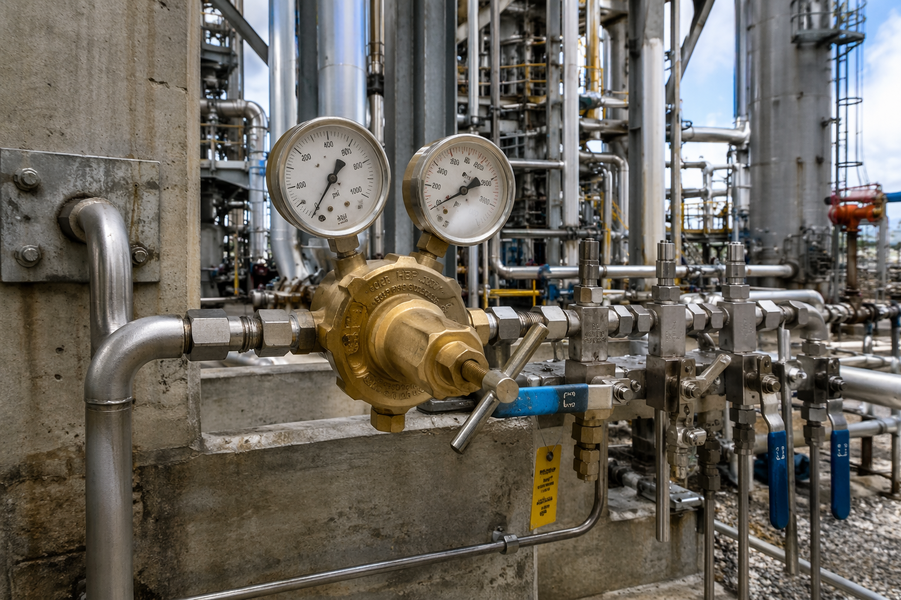
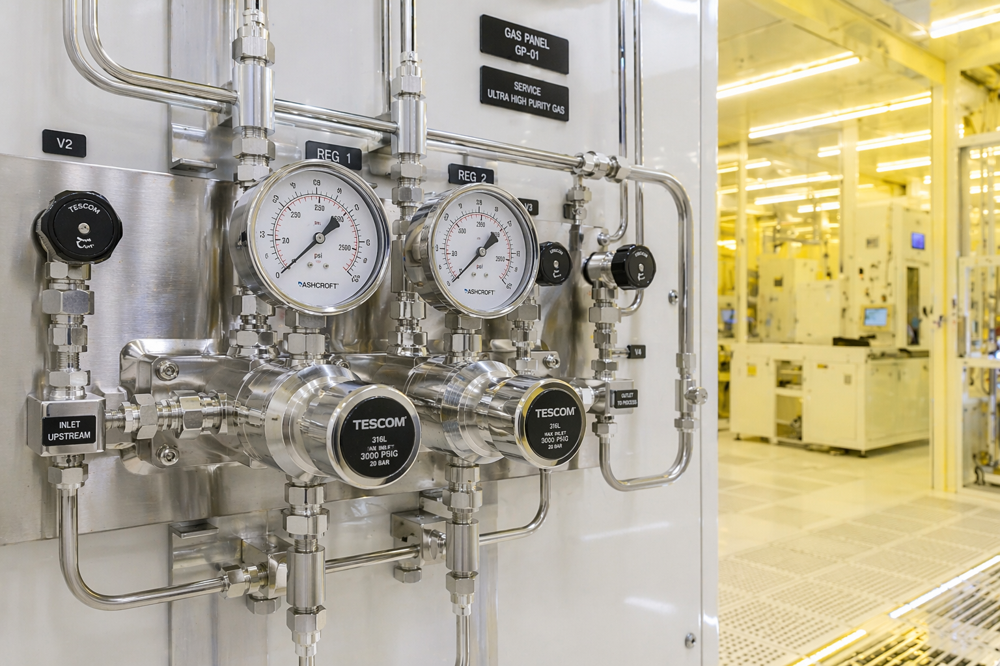
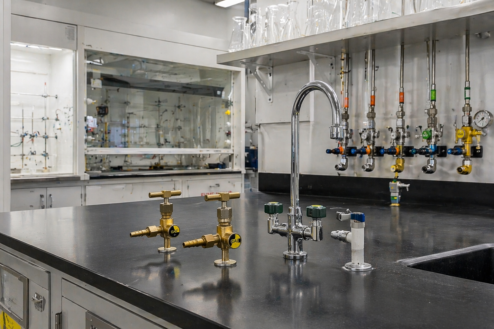
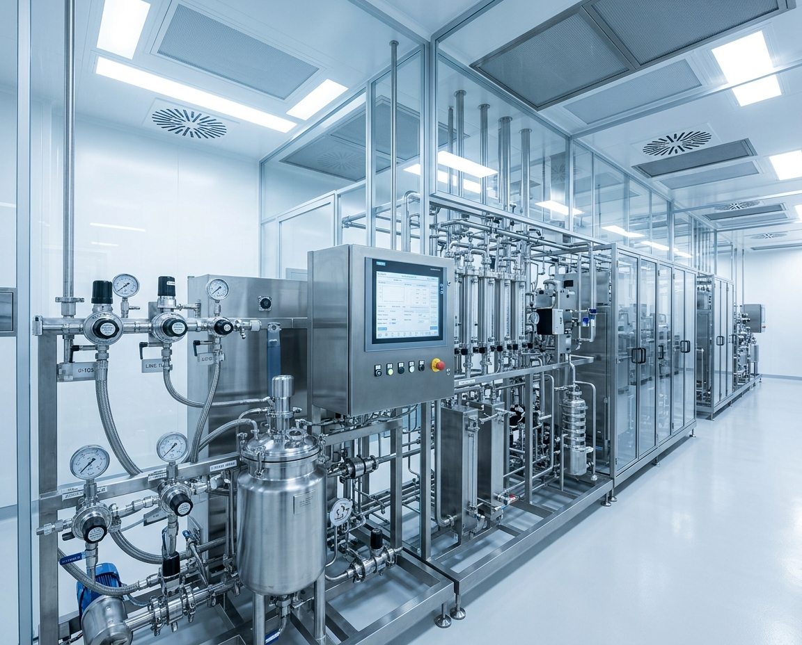
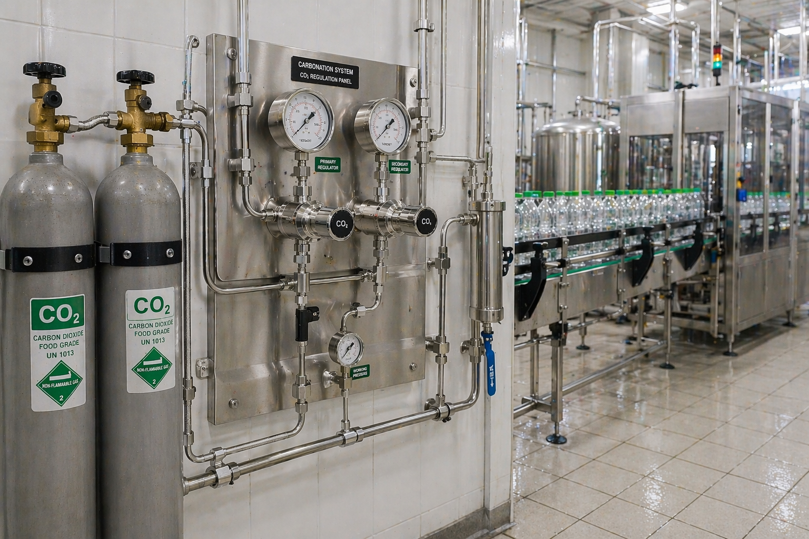
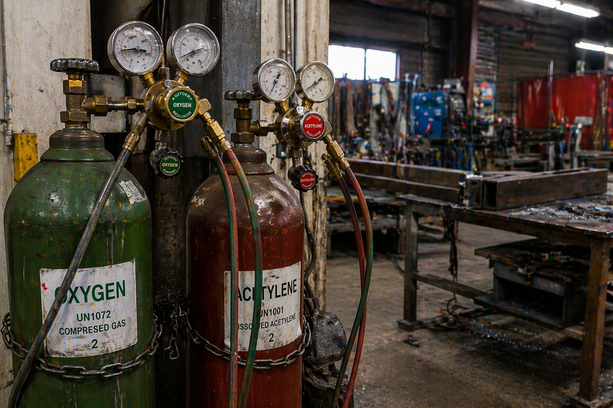
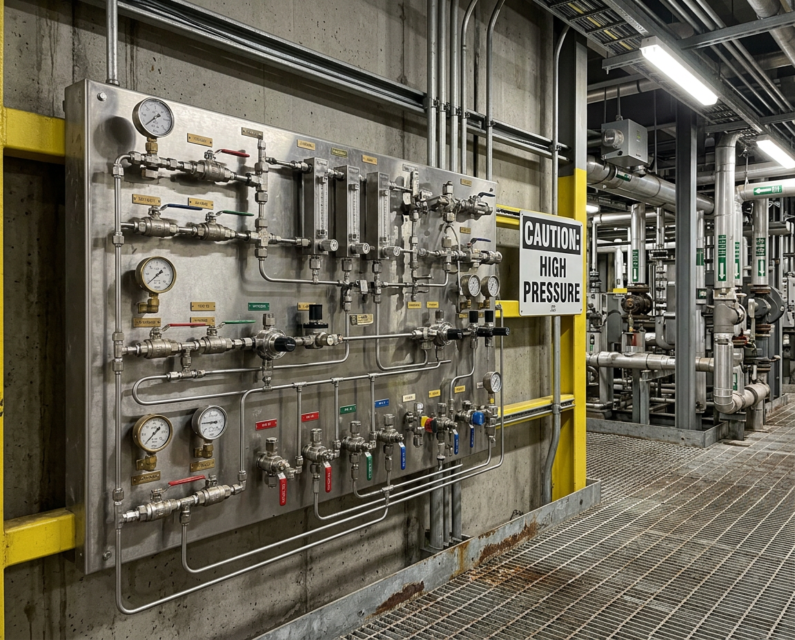
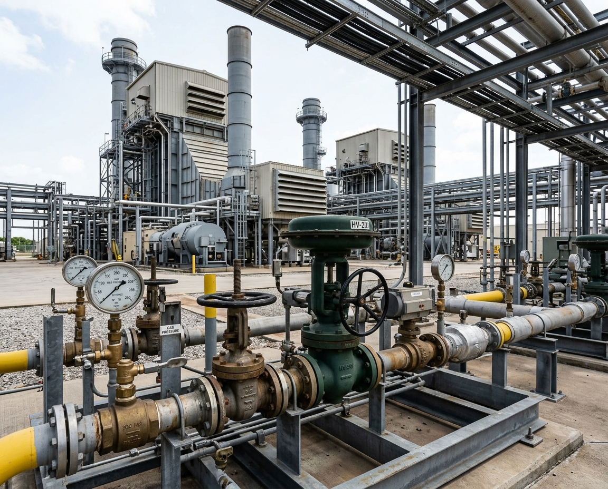

From oil & gas to semiconductors — our precision gas equipment serves critical applications across multiple sectors.

01
We supply high-pressure regulators, valves, and fittings engineered for the demands of upstream, midstream, and downstream operations. From wellhead pressure management to pipeline distribution, our equipment is built to perform in extreme conditions.
02
Cleanroom fabrication demands absolute gas purity. We provide ultra-high purity (UHP) regulators, valves, and gas delivery systems designed to meet the stringent contamination standards of semiconductor manufacturing.


03
Universities and commercial research facilities rely on precise, safe gas distribution. We supply bench-mounted and wall-mounted gas taps, combined gas and water taps, and precision regulators designed specifically for laboratory environments.
04
Pharmaceutical manufacturing requires gas equipment that meets strict compliance and quality standards. We provide high purity regulators and valves that ensure consistent, contamination-free gas delivery across production lines.


05
From carbonation systems to modified atmosphere packaging, we supply food-grade gas regulation equipment that keeps production lines running safely and efficiently. Our products meet the standards required for direct food contact applications.
06
Our cutting and welding regulators are built for the toughest fabrication environments. Trusted by welding, cutting, and fabrication professionals across the UK, we supply robust equipment backed by manufacturers with decades of proven performance.


07
Chemical plants handle aggressive and specialty gases that demand corrosion-resistant equipment. We supply regulators, valves, and fittings specifically designed to withstand harsh chemical environments while maintaining precise gas control.
08
From conventional power generation to renewable energy systems, we supply gas regulation equipment that supports the energy sector's evolving needs. Our products are trusted in utility-scale operations and emerging energy storage applications.

Why Industries Trust SCGS
Industrial, high purity, and ultra-high purity — one supplier for every grade.
Authorised distributor of Rotarex and Wescol — world-leading manufacturers with decades of heritage.
We understand your process requirements and recommend the right equipment.